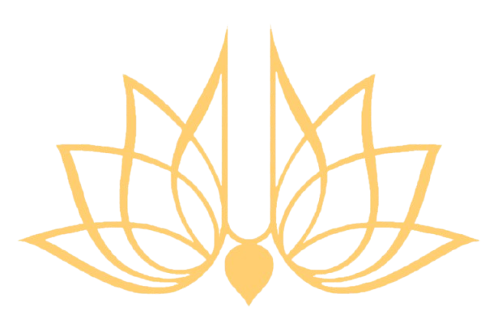

Abhay Charanaravinda Bhaktivedanta Swami Srila Prabhupada
Founder of ISKCON

Here's a time line of Srila Prabhupada's life :
Early Life and Education (1896–1922)
- 1896 (September 1) : Abhay Charan De is born in Calcutta, India, to Gaura Mohan De and Rajani Devi, a pious and devout Vaishnava family.
- 1901 : At age five, Abhay organizes a Ratha Yatra festival in his neighborhood, inspired by the Jagannath festival in Puri.
- 1916 : Enrolls at Scottish Church College in Calcutta, majoring in English, philosophy, and economics.
- 1920 : Completes his studies but declines his diploma in protest of British colonial rule, influenced by the Swadeshi movement.
Encounter with His Spiritual Master and Early Spiritual Work (1922–1944)
- 1922 : Meets Srila Bhaktisiddhanta Sarasvati Thakur in Calcutta. Bhaktisiddhanta urges him to preach Krishna consciousness in the English-speaking world.
- 1933 : Officially initiated by Srila Bhaktisiddhanta Sarasvati Thakur in Allahabad.
- 1935 : Encouraged by his guru to write and publish books on Krishna consciousness.
- 1936 (December 31) : Srila Bhaktisiddhanta Sarasvati Thakur passes away, reiterating his instruction to Abhay to spread Krishna consciousness in the West.
Preparation for a Global Mission (1944–1965)
- 1944 : Launches Back to Godhead, an English-language magazine, writing, editing, and distributing it single-handedly.
- 1950 : Retires from family life, adopting the vanaprastha (retired) stage.
- 1953 : Establishes the League of Devotees in Jhansi, an early attempt to spread Krishna consciousness.
- 1956 : Moves to the Radha-Damodar Temple in Vrindavan to dedicate himself to study, writing, and spiritual practice.
- 1959 : Takes sannyasa (renounced order of life) and becomes A. C. Bhaktivedanta Swami.
- 1962 : Begins translating and commenting on the Srimad Bhagavatam, self-publishing its first three volumes.
Journey to the West and Founding ISKCON (1965–1967)
- 1965 (August 13) : Boards the steamship Jaladuta, enduring two heart attacks during the 35-day journey to Boston.
- 1965 (September 19) : Arrives in New York City with only $7 and a trunk of books.
- 1966 (July 13) : Establishes ISKCON (International Society for Krishna Consciousness) in New York City. Begins weekly Bhagavad Gita classes and kirtans in Tompkins Square Park.
- 1967 : Opens ISKCON’s second temple in San Francisco, establishing the Hare Krishna movement’s presence on the West Coast.
Global Expansion of Krishna Consciousness (1968–1972)
- 1968 : Establishes ISKCON communities in Montreal, Los Angeles, London, and New Vrindaban (West Virginia). Introduces the Ratha Yatra festival in the Western world in San Francisco.
- 1969 : Sends disciples to London, where they record the Hare Krishna Mantra with George Harrison of The Beatles, achieving international recognition.
- 1970 : Forms the Governing Body Commission (GBC) to manage ISKCON’s global activities.
- 1971 : Visits Russia, planting the seeds of the Hare Krishna movement in the Soviet Union.
- 1972 : Publishes the Bhagavad Gita As It Is, his definitive commentary on the Gita, now one of the world’s most widely read translations.
Final Years and Literary Contributions (1973–1977)
- 1973 : Opens the Krishna-Balaram Mandir in Vrindavan and a temple in Mayapur, West Bengal, fulfilling his vision of restoring sacred pilgrimage sites.
- 1975 : Opens the Krishna temple in Juhu, Mumbai, after years of struggle, turning it into a major cultural and spiritual center.
- 1976–1977 : Continues traveling globally, inspiring his disciples, overseeing ISKCON's growth, and completing translations.
- 1977 (November 14) : Passes away in Vrindavan, India, surrounded by his disciples, while engaged in spiritual chanting.
Legacy
- Translated over 70 volumes of Vedic texts, including Srimad Bhagavatam, Chaitanya Charitamrita, and Nectar of Devotion.
- Established 108 temples across six continents.
- Inspired a global movement that continues to thrive, with millions of followers.
Read more about Prabhupada on Wiki